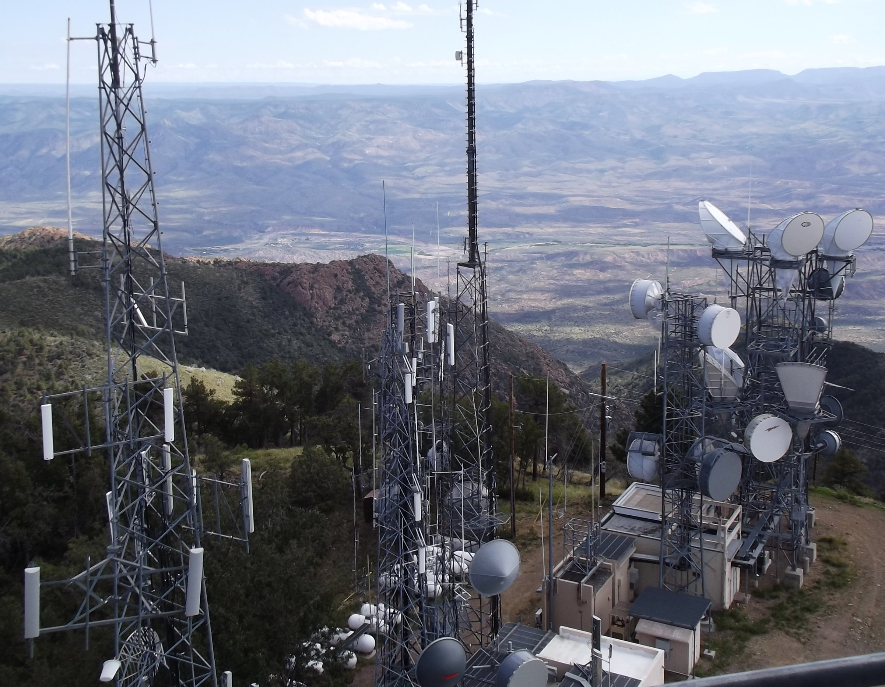

New to the net? Welcome.
Find the listed time, choose a repeater, and learn what to expect when net control calls for visitors.
Your first check-in ↗Check in, share your day, and get to know the people behind the call signs. Welcome to the 2100 Net.

Find the listed time, choose a repeater, and learn what to expect when net control calls for visitors.
Your first check-in ↗Connect on the air, ask about helping with net control, and revisit the faces from our early community.
Find your community ↗Explore recovered photographs, past operator rosters, and the original net’s welcoming spirit.
Explore the archive ↗“You are a friend we have not met yet.”
A welcome from the original website, preserved as an invitation to the next voice on the air.
The archived net format starts with roll call, welcomes visitors, then gives everyone a turn to share a little of their day.
See how the net works ↗